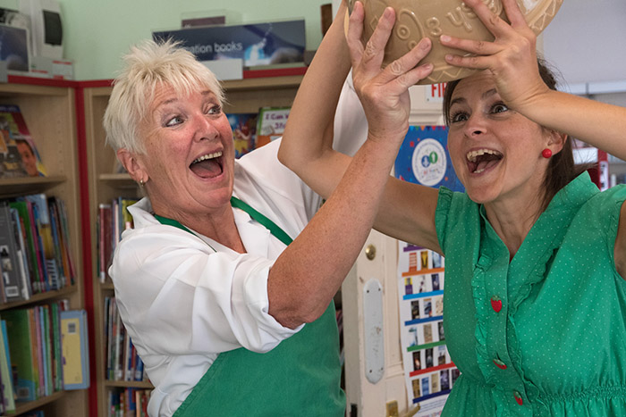

	<div id="oneCol" class="row">
		<div class="large-12 columns">
			<div class="medium-10 medium-offset-1 end columns">
				<p>Connie's Colander explored the evolving mother and daughter relationship as Alzheimers gradually impacted the mother's health. The play was performed nationally in libraries and community spaces.</p>
			</div>
			<div class="center">
				<a href="./human-story-1.html" title="View next Human Story Theatre photograph"></a>

				<span class="links"><a href="hst-2024-5.html">previous</a> | <a href="./human-story-1.html">next</a></span>
	 		 </div>
		</div>
	</div>


